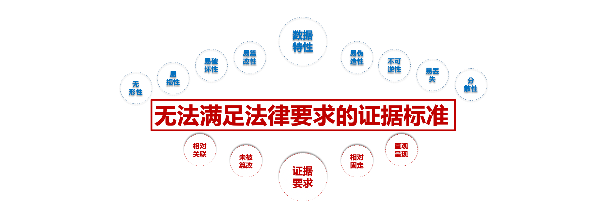

数科纠纷多元化解
以科技为解纷赋能，用法律为百姓解忧

数据保全
现实情况
电子数据≠电子证据
电子数据的特性与司法审理时对证据的要求截然相反，这是电子数据证据急需解决的矛盾！

司法要求
《金融机构债务人身份识别和债务人身份资料及交易记录保存管理办法》
第二十九条 金融机构应当按照下列期限保存债务人身份资料和交易记录：
（一）债务人身份资料，自业务关系结束当年或者一次性交易记账当年计起至少保存5年。
（二）交易记录，自交易记账当年计起至少保存5年。
《商业银行数据安全管理规范》
第6条应制定系统数据管理制度，对系统数据实行严格的安全与保密管理。系统数据管理制度应遵循以下原则
应采取有效措施防止系统数据的非法生成、变更、泄漏、丢失与破坏。
系统数据应进行核对审查，防止使用过程中产生误操作或被非法篡改
《网络借贷信息中介机构业务活动管理暂行办法》
第二十三条网络借贷信息中介机构应当采取适当的方法和技术，记录并妥善保存网络借贷业务活动数据和资料，做好数据备份。保存期限应当符合法律法规及网络借贷有关监管规定的要求，到期后应当至少保存5年。
战略合作
优势
-
强大的
公信力
-
强大的
运维能力
-
丰富的
司法实践
-
优质的
债务人案例
案例——银行
案例：天津某国有银行信贷业务电子合同司法鉴定
描述：天津某银行为开展信用卡贷款业务，建立电子合同签约系统，该系统对接信贷系统，为贷款人提供在线贷款签约服务，贷款人成功签约并借贷成功，随后发现部分贷款人无法偿还贷款，行方将违约人起诉至天津某中级人民法院，在提交证据过程中发现电子合同完整，但签约的签名值丢失，无法提供完整的证据链供法院参考，随后我方介入做电子合同司法鉴定，并提供相应鉴定意见书，成功完成诉讼。
案例分析：本案中，发现了比较有代表性的问题：
1、行方使用了电子签名相关工具对签约及借款人身份做了审核，但缺乏有效的数据保全系统对整个数据链做保全，没有对数据形成有效的整理查询梳理。
2、系统前期未跟司法鉴定中心做系统法律风险评估，对系统证据留存方面没有专业人员的介入，对事后的鉴定工作带来很大影响，直接导致司法鉴定过程比较复杂，鉴定周期过长，费用较高等问题。
顶部